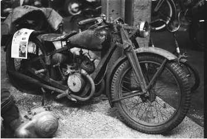
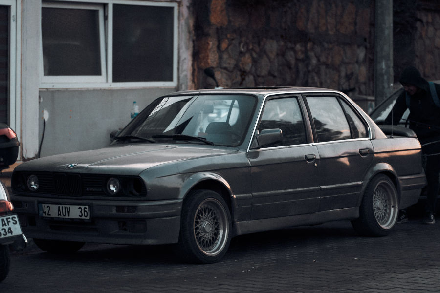

História da BMW
Origem
A empresa foi fundada em 1916, na cidade de Munique, na Alemanha. Inicialmente, a BMW produzia motores para aviões, não automóveis.
Primeiros anos
Durante a Primeira Guerra Mundial, a empresa fabricou motores aeronáuticos. Após a guerra, restrições impostas à Alemanha obrigaram a BMW a diversificar sua produção, passando a fabricar:
- Motores industriais
- Motocicletas
- Automóveis
Em 1923, lançou sua primeira motocicleta, a BMW R 32, que fez muito sucesso.

Entrada no mercado de carros
Em 1928, a BMW começou a fabricar automóveis. Com o passar dos anos, a marca ganhou fama pela qualidade, tecnologia e desempenho de seus veículos.
Segunda Guerra Mundial
Durante a Segunda Guerra Mundial, a BMW voltou a produzir motores para aviões militares. Após o conflito, suas fábricas sofreram grandes danos e a empresa enfrentou dificuldades financeiras.
Recuperação e crescimento
Na década de 1950, a BMW conseguiu se recuperar e passou a investir fortemente em carros esportivos e de luxo. Nos anos 1970, lançou modelos que ajudaram a consolidar sua reputação mundial, como a série 3.
